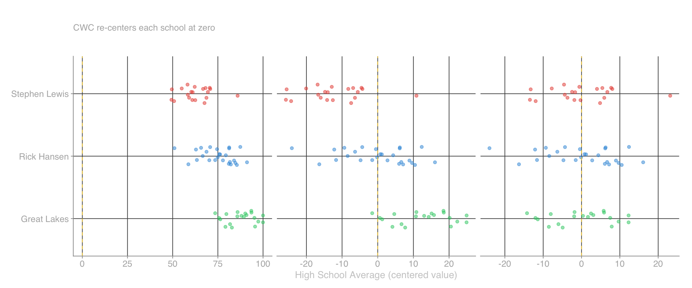
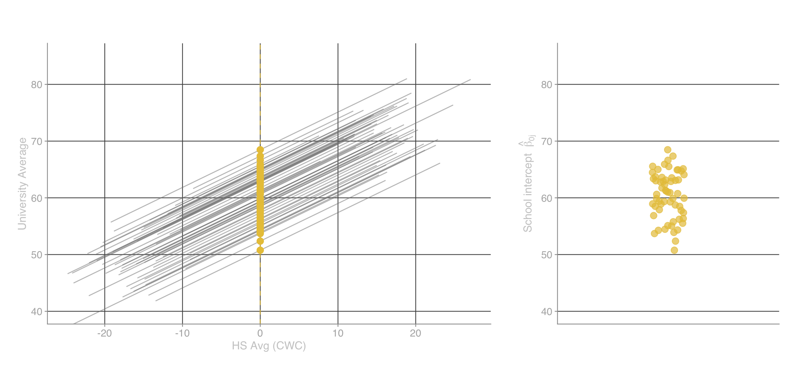
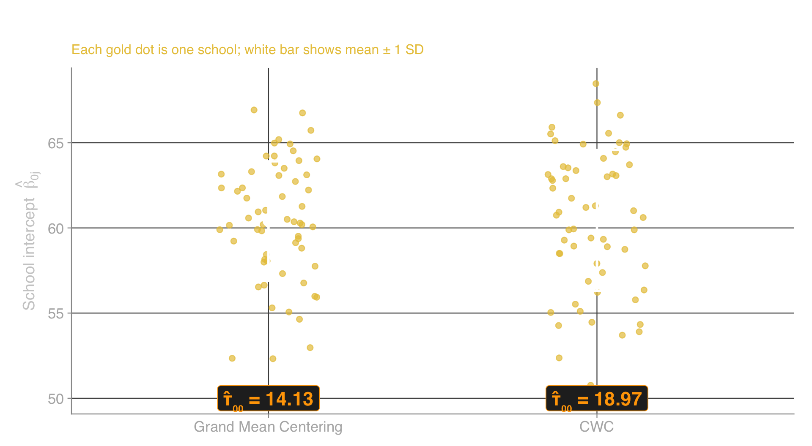
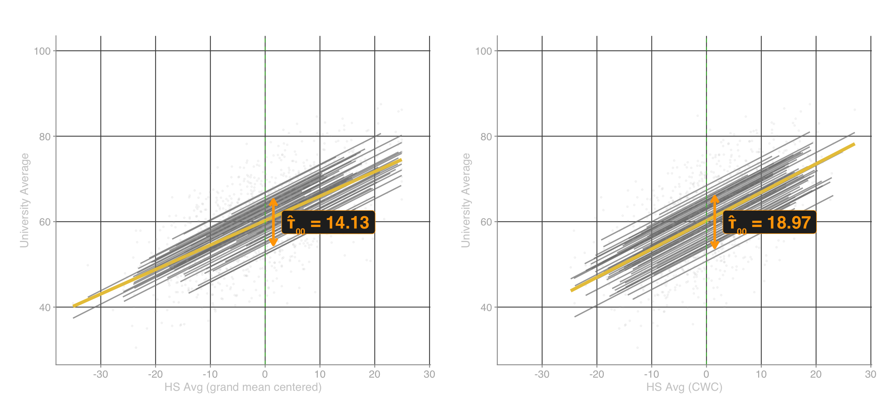
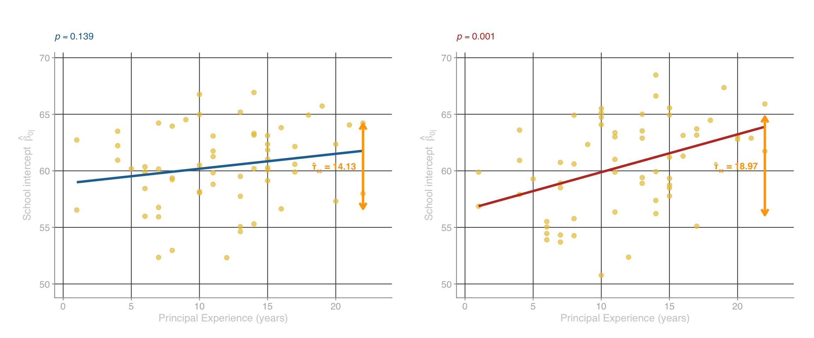
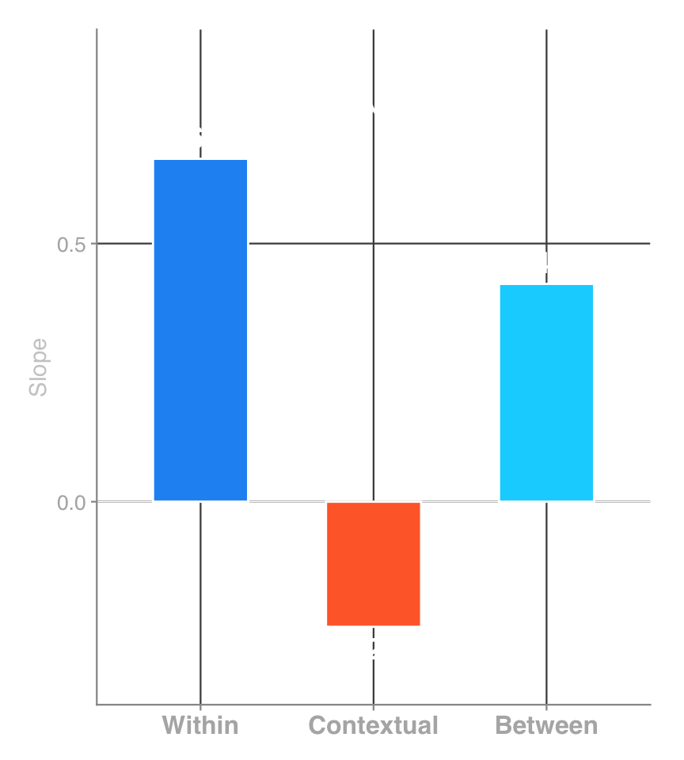

| effect | group | term | estimate | std.error | statistic | df | p.value |
|---|---|---|---|---|---|---|---|
| fixed | (Intercept) | 60.432 | 0.594 | 101.75 | 59.35 | 0 | |
| ran_pars | high_school | sd__(Intercept) | 4.168 | ||||
| ran_pars | Residual | sd__Observation | 8.477 |
Later today, we will fit the same model to the same data with the same predictor — and get two opposite conclusions:
The only thing that changed was a single data-preparation step: how we centered the Level-1 predictor.
How is that possible? Let’s build toward the answer.
Before we compare centering approaches, we need a frame of reference — the between-school variance when no predictors are in the model. This comes from the unconditional means model (UCM) we fit in the last lecture:
| effect | group | term | estimate | std.error | statistic | df | p.value |
|---|---|---|---|---|---|---|---|
| fixed | (Intercept) | 60.432 | 0.594 | 101.75 | 59.35 | 0 | |
| ran_pars | high_school | sd__(Intercept) | 4.168 | ||||
| ran_pars | Residual | sd__Observation | 8.477 |
\[ \hat{\tau}_{00} = 4.168^2 = 17.37 \qquad \hat{\sigma}^2 = 8.477^2 = 71.86 \qquad \text{ICC} = \frac{17.37}{17.37 + 71.86} = 0.195 \]
\(\hat{\tau}_{00} = 17.37\) is the number to remember. Every pseudo-\(R^2\) at Level 2 in this lecture uses it as the denominator — the baseline against which we measure how much between-school variance a predictor explains. When we say “adding predictor X reduced \(\hat{\tau}_{00}\) by \(Y\)%,” we mean relative to this 17.37.
Recall from the last lecture: grand mean centering subtracts the overall sample mean from every student’s score. Every student gets shifted by the same constant.
\[ X_{1ij}^{\text{gmc}} = X_{1ij} - \bar{X} \]
For the Waterloo data, the grand mean of high school average is 75.07, so:
student_hs_avg_gmc \(=\) student_hs_avg \(-\) 75.07
What changed:
What did not change:
The random-intercept model with grand mean centering:
\[ \begin{aligned} \text{Level 1:} \quad Y_{ij} &= \beta_{0j} + \gamma_{10} \, X_{1ij}^{\text{gmc}} + r_{ij} \\ \text{Level 2:} \quad \beta_{0j} &= \gamma_{00} + u_{0j} \end{aligned} \]
Plugging in the estimates:
\[ \begin{aligned} \text{Level 1:} \quad Y_{ij} &= \beta_{0j} + 0.649 \; X_{1ij}^{\text{gmc}} + r_{ij}, \quad r_{ij} \sim N(0,\; \hat{\sigma}^2 = 39.84) \\ \text{Level 2:} \quad \beta_{0j} &= 60.41 + u_{0j}, \quad u_{0j} \sim N(0,\; \hat{\tau}_{00} = 14.13) \end{aligned} \]
Interpretation: A student with an average high school grade (\(X_{1ij}^{\text{gmc}} = 0\)) is predicted to earn a 60.41 university average, plus or minus the school’s random intercept \(u_{0j}\).
| Component | Estimate | Meaning |
|---|---|---|
| \(\hat{\gamma}_{00}\) (intercept) | 60.41 | Predicted university grade for average-HS-grade student |
| \(\hat{\gamma}_{10}\) (slope) | 0.649 | Each 1-point increase in HS grade → 0.649-point increase in university grade |
| \(\hat{\tau}_{00}\) | 14.13 | Between-school variance in intercepts |
| \(\hat{\sigma}^2\) | 39.84 | Within-school (residual) variance |
| \(R^2_1\) (Level 1) | 44.6% | Within-school variance explained |
| \(R^2_2\) (Level 2) | 18.6% | Between-school variance explained |
We also found that adding a compositional predictor (the school mean of high school average) revealed a grade-inflation signal: schools with higher-performing students actually had lower university grades once individual performance was controlled. The school mean coefficient was -0.242.
Today’s question: What happens if we center differently — subtracting each school’s mean instead of the grand mean?
Centering choice alone can determine whether you conclude a predictor matters or doesn’t — with the same data, the same model structure, and the same predictor. Later in this lecture, we’ll see a difference dramatic enough to change a research conclusion.
Today’s plan:
Centering within cluster (CWC) — also called group mean centering (Enders & Tofighi, 2007) — subtracts each school’s own mean rather than the grand mean:
\[ X_{1ij}^{\text{cwc}} = X_{1ij} - \bar{X}_{.j} \]
where \(\bar{X}_{.j}\) is the mean of the Level-1 predictor in cluster \(j\).
The key difference from grand mean centering:
After CWC, a student’s score tells you how far they are from their own school’s average, not from the overall average. A score of +5 means “5 points above my school’s mean.”
Grand Mean Centering
| School | Student | Raw | Grand Mean | GMC |
|---|---|---|---|---|
| Great Lakes | Priya | 88.1 | -75.1 | 13.0 |
| Great Lakes | Ben | 90.2 | -75.1 | 15.1 |
| Great Lakes | Chloe | 75.7 | -75.1 | 0.6 |
| Rick Hansen | Jack | 63.4 | -75.1 | -11.7 |
| Rick Hansen | Mei | 81.7 | -75.1 | 6.6 |
| Rick Hansen | Felix | 82.2 | -75.1 | 7.1 |
| Stephen Lewis | Grace | 62.5 | -75.1 | -12.6 |
| Stephen Lewis | Henry | 50.8 | -75.1 | -24.3 |
| Stephen Lewis | Kofi | 55.0 | -75.1 | -20.1 |
Subtracts 75.07 from everyone — school differences preserved
Centering Within Cluster
| School | Student | Raw | Sch Mean | CWC |
|---|---|---|---|---|
| Great Lakes | Priya | 88.1 | -87.7 | 0.4 |
| Great Lakes | Ben | 90.2 | -87.7 | 2.5 |
| Great Lakes | Chloe | 75.7 | -87.7 | -12.0 |
| Rick Hansen | Jack | 63.4 | -75.0 | -11.6 |
| Rick Hansen | Mei | 81.7 | -75.0 | 6.7 |
| Rick Hansen | Felix | 82.2 | -75.0 | 7.2 |
| Stephen Lewis | Grace | 62.5 | -62.8 | -0.3 |
| Stephen Lewis | Henry | 50.8 | -62.8 | -12.0 |
| Stephen Lewis | Kofi | 55.0 | -62.8 | -7.8 |
Subtracts each school’s own mean — school differences removed

Notice how the three school clusters overlap in the CWC panel but remain separated in the raw and grand-mean-centered panels — CWC removed the between-school differences.
Notice two things:
After CWC, a student’s score tells you: “How many points above or below their own school’s average is this student?”
Zoom Poll
Two students both have a raw high school average of 85. Student A’s school has a mean of 80. Student B’s school has a mean of 90. After CWC, who has the higher centered score?
Apply the CWC formula: \(X_{1ij}^{\text{cwc}} = X_{1ij} - \bar{X}_{.j}\). Compute each student’s centered score before we advance.
Let’s check: Student A scores 85 at a school with mean 80. Student B scores 85 at a school with mean 90.
| Student A | Student B | |
|---|---|---|
| Raw HS average | 85 | 85 |
| Grand mean centered (\(85 - 75.1\)) | 9.9 | 9.9 |
| CWC (\(85 - \bar{X}_{.j}\)) | \(85 - 80 = +5\) | \(85 - 90 = -5\) |
(a) Student A has the higher centered score. Under grand mean centering, both students get identical centered scores — the model treats them the same. Under CWC, Student A is 5 points above their school’s mean while Student B is 5 points below — the model distinguishes them. Option (c) confuses CWC with grand mean centering (which does give identical scores). Option (d) is wrong because CWC uses each school’s mean, not the grand mean.
When we use grand mean centering without the school mean in the model, the slope \(\hat{\gamma}_{10}\) reflects both:
These two effects are blended into a single number. We can’t tell how much is “within” and how much is “between.”
Under CWC, the predictor has been stripped of all between-school information. Every school’s mean is zero. There is nothing left in the predictor to capture school-level differences.
Therefore, the CWC slope is purely within-school: for students within the same school, each 1-point increase in HS grade is associated with an increase in university grade that reflects only within-school variation.
| Centering approach | What the slope captures |
|---|---|
| Grand mean centering | Blend of within and between effects |
| CWC | Pure within-school effect only |
This distinction may seem subtle now, but the consequences can be dramatic — as we’ll see when we compare model output.
To make this tangible, consider two comparisons from the Waterloo data:
Within-school comparison (same school, different students):
Between-school comparison (different schools, “average” students):
| Within-school | Between-school | |
|---|---|---|
| What varies? | Individual student performance | School context and composition |
| What’s held constant? | School environment | Nothing — schools differ in many ways |
| Confounds? | Minimal — same context | Many — school mean is a proxy for unmeasured school characteristics |
Grand mean centering uses one slope for both comparisons. CWC says: “These are different questions — let me give you separate answers.”
We fit the same random-intercept model twice — once with grand mean centering, once with CWC:
Grand mean centering
Both models have the same structure: one Level-1 predictor and a random intercept. The only difference is how the predictor was centered.
What do you expect to change?
Focus on the slope (the student_hs_avg_gmc row) and the intercept variance (sd__(Intercept) in the high_school group, squared to get \(\hat{\tau}_{00}\)).
| effect | group | term | estimate | std.error | statistic | df | p.value | conf.low | conf.high |
|---|---|---|---|---|---|---|---|---|---|
| fixed | (Intercept) | 60.406 | 0.520 | 116.089 | 59.213 | 0 | 59.365 | 61.447 | |
| fixed | student_hs_avg_gmc | 0.649 | 0.021 | 30.778 | 1207.247 | 0 | 0.607 | 0.690 | |
| ran_pars | high_school | sd__(Intercept) | 3.759 | ||||||
| ran_pars | Residual | sd__Observation | 6.312 |
\[ \hat{\tau}_{00} = 3.759^2 = 14.13 \qquad \hat{\sigma}^2 = 6.312^2 = 39.84 \]
\[ \begin{aligned} \text{Level 1:} \quad Y_{ij} &= \beta_{0j} + 0.649 \; X_{1ij}^{\text{gmc}} + r_{ij}, \quad r_{ij} \sim N(0,\; 39.84) \\ \text{Level 2:} \quad \beta_{0j} &= 60.41 + u_{0j}, \quad u_{0j} \sim N(0,\; 14.13) \end{aligned} \]
Key finding: The GMC slope (0.649) is a blend of within-school and between-school effects — it does not tell you the pure within-school relationship. Note \(\hat{\tau}_{00} = 14.13\) — on the next slide, watch what happens to this value when we switch to CWC. Because the blended GMC slope absorbs some between-school variance, this \(\hat{\tau}_{00}\) is artificially low.
Same two rows to watch: slope and intercept variance. Compare them to the values on the previous slide.
| effect | group | term | estimate | std.error | statistic | df | p.value | conf.low | conf.high |
|---|---|---|---|---|---|---|---|---|---|
| fixed | (Intercept) | 60.447 | 0.593 | 101.957 | 59.176 | 0 | 59.261 | 61.633 | |
| fixed | student_hs_avg_cwc | 0.664 | 0.022 | 30.489 | 1154.290 | 0 | 0.621 | 0.707 | |
| ran_pars | high_school | sd__(Intercept) | 4.356 | ||||||
| ran_pars | Residual | sd__Observation | 6.312 |
\[ \hat{\tau}_{00} = 4.356^2 = 18.97 \qquad \hat{\sigma}^2 = 6.312^2 = 39.84 \]
\[ \begin{aligned} \text{Level 1:} \quad Y_{ij} &= \beta_{0j} + 0.664 \; X_{1ij}^{\text{cwc}} + r_{ij}, \quad r_{ij} \sim N(0,\; 39.84) \\ \text{Level 2:} \quad \beta_{0j} &= 60.45 + u_{0j}, \quad u_{0j} \sim N(0,\; 18.97) \end{aligned} \]
Key finding: The CWC slope (0.664) is the pure within-school effect — and the intercept variance has increased (18.97 vs. 14.13). It may look like a small slope change caused a large variance change — but the slope didn’t cause the variance shift. The centering choice changed both: it changed what the slope estimates and, independently, how variance is partitioned. Let’s compare directly.
| Component | Grand Mean Centered | CWC | Changed? |
|---|---|---|---|
| Intercept (\(\hat{\gamma}_{00}\)) | 60.41 | 60.45 | Negligible |
| Slope (\(\hat{\gamma}_{10}\)) | 0.649 | 0.664 | Yes |
| Intercept variance (\(\hat{\tau}_{00}\)) | 14.13 | 18.97 | Yes |
| Residual variance (\(\hat{\sigma}^2\)) | 39.84 | 39.84 | Negligible |
| Pseudo-\(R^2_1\) (Level 1 vs. UCM) | 44.6% | 44.6% | No |
| Pseudo-\(R^2_2\) (Level 2 vs. UCM) | 18.6% | -9.2% | Yes |
Three surprises:
Recall: within-school comparisons (two students at the same school) and between-school comparisons (average students at different schools) are different questions.
Under GMC, the slope tries to fit both patterns with a single number:
\[ \hat{\gamma}_{10}^{\text{gmc}} = 0.649 \quad \text{(blend of within + between)} \]
Under CWC, the predictor contains no between-school information — every school’s mean has been set to zero. The slope can only capture the within-school pattern:
\[ \hat{\gamma}_{10}^{\text{cwc}} = 0.664 \quad \text{(pure within-school)} \]
In this dataset the difference is small (0.649 vs. 0.664) because the within-school and between-school effects of HS average happen to be similar.
But in many applied settings they differ substantially or even flip sign. In those cases, the GMC slope would be a misleading compromise between two different effects.
You might be wondering: if CWC removes between-school differences from the predictor, have we lost information?
No. You just saw where it went. The between-school variance moved into \(\hat{\tau}_{00}\): it increased from 14.13 (GMC) to 18.97 (CWC). That’s the relocated between-school variance.
Think of it as sorting mail: CWC puts within-school variance in one bin (the slope) and between-school variance in another (\(\hat{\tau}_{00}\)). Grand mean centering dumps both into the same bin (the slope). Nothing was lost — just separated. Let’s unpack these two remaining surprises.
Chat Drop
We have two remaining surprises: (1) the between-school variance increased under CWC, and (2) the Level-2 pseudo-\(R^2\) went negative. Which surprises you more, and why? Type your answer in the chat.
One sentence is enough. There’s no wrong answer — we’re about to explain both.
Trace the between-school variance through each model:
| Model | \(\hat{\tau}_{00}\) | What happened to between-school variance |
|---|---|---|
| UCM (no predictors) | 17.37 | All sits in \(\hat{\tau}_{00}\) |
| GMC random intercept | 14.13 | Level-1 slope absorbed 3.24 units (it blends within + between) |
| CWC random intercept | 18.97 | Level-1 slope is purely within — absorbed none |
The result: \(\hat{\tau}_{00}^{\text{CWC}}\) (18.97) > \(\hat{\tau}_{00}^{\text{UCM}}\) (17.37) > \(\hat{\tau}_{00}^{\text{GMC}}\) (14.13)
We’ve been tracking how \(\hat{\tau}_{00}\) changes across centering approaches. To see this difference, we need to plot each school’s intercept \(\hat{\beta}_{0j}\). Let’s make sure we understand what that quantity is.
Recall the Level-2 equation: \(\beta_{0j} = \gamma_{00} + u_{0j}\). Each school gets its own intercept. \(\hat{\beta}_{0j}\) is the model’s predicted university grade for the average student at school \(j\) — a student whose centered HS average equals zero. Here are three concrete examples from the CWC model:
| School | Predicted University Grade (β̂₀ⱼ) |
|---|---|
| Great Lakes | 65.5 |
| Rick Hansen | 60.9 |
| Stephen Lewis | 50.8 |
Each number summarizes an entire school in a single value. In the graphs that follow, every dot is one school, positioned at its \(\hat{\beta}_{0j}\) on the y-axis. The spread of these dots across all 30 schools reflects \(\hat{\tau}_{00}\).

On the left, each grey line is one school’s regression line from the CWC model. The gold dots mark where each line crosses the dashed vertical line at \(X^{\text{cwc}} = 0\). On the right, those dots are extracted and plotted alone. This is how every school-level graph in this lecture works: each dot is one school, positioned at its \(\hat{\beta}_{0j}\).

Compare the vertical spread of the grey school-specific lines between the two panels — wider spread means larger \(\hat{\tau}_{00}\).

Key finding: The grey lines (individual schools) are more spread out in the CWC panel — CWC removes within-school variance, exposing the true between-school differences. That larger \(\hat{\tau}_{00}\) means more variance available for a Level-2 predictor to explain.
Both surprises are two faces of the same coin. To see why, let’s compute the Level-2 pseudo-\(R^2\) for both approaches. The formula is the same each time — only \(\hat{\tau}_{00}\) changes:
\[ R^2_2 = 1 - \frac{\hat{\tau}_{00,\text{model}}}{\hat{\tau}_{00,\text{UCM}}} \]
Grand Mean Centering
The GMC slope blends within + between effects, so it absorbs some between-school variance. That shrinks \(\hat{\tau}_{00}\):
\[ R^2_2 = 1 - \frac{14.13}{17.37} = 1 - 0.814 = 0.186 \]
Ratio < 1 → \(R^2_2\) is positive ✓
Centering Within Cluster
The CWC slope is purely within-school, so it can’t absorb any between-school variance. \(\hat{\tau}_{00}\) actually grows:
\[ R^2_2 = 1 - \frac{18.97}{17.37} = 1 - 1.092 = -0.092 \]
Ratio > 1 → \(R^2_2\) is negative ← the surprise
The takeaway: The negative \(R^2_2\) isn’t an error — it’s telling you CWC exposed more between-school variance than the UCM estimated, leaving more for a Level-2 predictor to explain.
Remember: The denominator is always \(\hat{\tau}_{00,\text{UCM}} = 17.37\) — the between-school variance from the unconditional means model (no predictors). This is your frame of reference: it tells you how much between-school variance existed before you added anything. Both pseudo-\(R^2_2\) calculations above divide by this same 17.37. The numerator changes (because centering changes \(\hat{\tau}_{00,\text{model}}\)), but the denominator stays fixed at the UCM baseline.
Before we move on, a common misreading: “I used grand mean centering, so my slope is the within-school effect.” That is only true if the school mean is also in the model. Without it, the grand-mean-centered slope conflates within-school and between-school effects into a single blended number.
Later, when we add the school mean, you’ll see the grand-mean-centered slope converge to the CWC value. Until then, treat it as a blend.
Key finding: GMC without the school mean in the model blends within- and between-school effects into one slope. CWC always gives you the pure within-school effect automatically.
From the last lecture, principal_experience is a global Level-2 predictor — a variable that exists only at the school level and was never an individual-level variable (recall: global = a property of the group itself, like principal tenure or school funding).
We center it around its mean (\(\bar{W}\)) so the intercept remains interpretable:
\[ W_j^c = W_j - \bar{W} \]
Note: the GMC vs. CWC choice only applies to Level-1 predictors. A Level-2 predictor like principal experience exists only at the school level — there is no within-school variation to separate, so we simply center it around its grand mean.
Now we’ll add it to both the grand-mean-centered and CWC models and see what happens.
| effect | group | term | estimate | std.error | statistic | df | p.value |
|---|---|---|---|---|---|---|---|
| fixed | (Intercept) | 60.392 | 0.515 | 117.311 | 58.143 | 0.000 | |
| fixed | student_hs_avg_gmc | 0.646 | 0.021 | 30.604 | 1207.937 | 0.000 | |
| fixed | principal_experience_c | 0.154 | 0.102 | 1.501 | 59.388 | 0.139 | |
| ran_pars | high_school | sd__(Intercept) | 3.713 | ||||
| ran_pars | Residual | sd__Observation | 6.312 |
\[ \begin{aligned} \text{Level 1:} \quad Y_{ij} &= \beta_{0j} + 0.646 \; X_{1ij}^{\text{gmc}} + r_{ij} \\ \text{Level 2:} \quad \beta_{0j} &= 60.39 + 0.154 \; W_j^c + u_{0j} \end{aligned} \]
Conclusion: Under grand mean centering, principal experience is not significant (\(\hat{\gamma}_{01} = 0.154\), \(p = 0.139\)). We would conclude that principal experience does not predict university grades.
| effect | group | term | estimate | std.error | statistic | df | p.value |
|---|---|---|---|---|---|---|---|
| fixed | (Intercept) | 60.409 | 0.546 | 110.620 | 58.730 | 0.000 | |
| fixed | student_hs_avg_cwc | 0.664 | 0.022 | 30.493 | 1154.868 | 0.000 | |
| fixed | principal_experience_c | 0.373 | 0.108 | 3.442 | 59.369 | 0.001 | |
| ran_pars | high_school | sd__(Intercept) | 3.971 | ||||
| ran_pars | Residual | sd__Observation | 6.311 |
\[ \begin{aligned} \text{Level 1:} \quad Y_{ij} &= \beta_{0j} + 0.664 \; X_{1ij}^{\text{cwc}} + r_{ij} \\ \text{Level 2:} \quad \beta_{0j} &= 60.41 + 0.373 \; W_j^c + u_{0j} \end{aligned} \]
Conclusion: Under CWC, principal experience is highly significant (\(\hat{\gamma}_{01} = 0.373\), \(p = 0.001\)). We would conclude that principal experience does predict university grades. Same data, same predictor — different centering, opposite conclusion.
| Component | Grand Mean Centered | CWC |
|---|---|---|
| \(\hat{\gamma}_{10}\) (HS avg slope) | 0.646 | 0.664 |
| \(\hat{\gamma}_{01}\) (principal exp.) | 0.154 | 0.373 |
| \(p\)-value for principal exp. | 0.139 | 0.001 |
| \(\hat{\tau}_{00}\) | 13.78 | 15.77 |
| Pseudo-\(R^2_2\) (vs. model w/o principal exp.) | 2.5% | 16.9% |
The same data, the same predictor, the same model structure — but one centering approach says principal experience matters (\(p = 0.001\)) and the other says it doesn’t (\(p = 0.139\)).
Think, Then Reveal
The same predictor (principal experience) went from \(p = 0.139\) under grand mean centering to \(p = 0.001\) under CWC. Using what you’ve learned about how centering affects \(\hat{\tau}_{00}\), why did the Level-2 predictor gain so much power under CWC?
Take 30 seconds to think before we advance.
Follow the numbers:
More available variance → larger reduction → larger coefficient → smaller \(p\)-value. The centering choice didn’t change the data — it changed how much between-school variance principal experience had the opportunity to explain.
Remember the mail-sorting analogy? Grand mean centering’s blended slope absorbed between-school variance into the slope’s bin — so when principal experience came looking for between-school variance, the bin was half-empty. Think of \(\hat{\tau}_{00}\) as that pool of between-school variance. Principal experience can only explain what’s in the pool. Watch what happens to the pool under each approach:
| Grand Mean Centering | CWC | |
|---|---|---|
| \(\hat{\tau}_{00}\) in the UCM (total pool) | 17.37 | 17.37 |
| \(\hat{\tau}_{00}\) after adding HS avg (pool remaining) | 14.13 | 18.97 |
| Variance absorbed by Level-1 predictor | 3.24 (17.37 − 14.13) [steals from Level-2 pool] |
-1.6 (17.37 − 18.97) [none stolen — pool preserved] |
| \(\hat{\tau}_{00}\) after also adding principal exp. | 13.78 | 15.77 |
| Variance absorbed by principal exp. | 0.35 (14.13 − 13.78) [little left to explain] |
3.2 (18.97 − 15.77) [full pool available] |
The graphs on the next slide plot each school as a single dot. Each dot has two coordinates: principal experience on the x-axis and the school’s predicted university-grade mean (\(\hat{\beta}_{0j}\)) on the y-axis. Here are three examples from the CWC model:
| School | Principal Experience (years) | Predicted Uni Grade (β̂₀ⱼ) |
|---|---|---|
| Great Lakes | 10 | 65.5 |
| Rick Hansen | 4 | 60.9 |
| Stephen Lewis | 10 | 50.8 |
Each row becomes a dot on the next slide. The question is whether schools with more experienced principals tend to have higher or lower predicted university-grade means — and whether that relationship changes depending on how the Level-1 predictor was centered.

Each dot is one school. The y-axis is the school’s predicted university-grade mean (\(\hat{\beta}_{0j}\)) from the random-intercept model without principal experience. The orange arrows show ±1 SD of \(\hat{\tau}_{00}\) — notice the CWC arrow is taller.
“One centering approach is always right.” CWC + school mean is the safer default because it automatically separates within and between effects and gives you all three quantities (within, between, contextual). Grand mean centering without the school mean is appropriate when you have reason to believe the within and between effects are the same — but you don’t know they’re the same until you check. CWC + school mean is that check.
“The slopes are almost the same, so centering doesn’t matter.” For high school average, the within and between effects happen to be similar (0.649 vs. 0.664). But we just saw that centering choice flipped principal experience from \(p = 0.139\) to \(p = 0.001\). You cannot tell whether centering matters for a given analysis by eyeballing one predictor’s slopes. Assuming similarity without testing is like assuming homogeneity of variance without running Levene’s test.
Example: Hours studied → exam score (students nested in schools)
Same variable, opposite sign at each level.
We’ve now seen two problems with grand mean centering alone:
And we’ve seen that CWC fixes both — but at the cost of not directly estimating the between-school or contextual effects.
The question: Is there a model that gives you everything — the pure within-school effect, the between-school effect, and the contextual effect — regardless of which centering you started with?
Yes. Adding the school mean (\(\bar{X}_{.j}\)) to either model reconciles both approaches. Let’s see how.
Imagine two schools. School A’s students average 80 on HS grades; School B’s students average 75.
Take a student with an HS grade of 78. Based on the within-school slope alone, we’d predict the same university grade for her regardless of which school she attends — her own grade is 78 either way.
But now place her in two different contexts:
The contextual effect asks: does being at a higher-mean school help or hurt, holding her own grade constant?
Does being at a higher-mean school help or hurt, holding the student’s own grade constant?
The three effects are algebraically linked: between = within + contextual
\[0.422 = 0.664 + (-0.242)\]
From the last lecture, the school mean (\(\bar{X}_{.j}\)) is a compositional Level-2 predictor — it’s aggregated from the same individual-level variable (student_hs_avg) that already appears at Level 1. Unlike a global predictor (e.g., principal experience), a compositional predictor requires extra care because the within-school and between-school effects can differ. Adding it to the model decomposes the effect into those two components. Let’s add it to both models and see what converges:
Grand mean centering + school mean
Grand mean centering + school mean
| effect | group | term | estimate | std.error | statistic | df | p.value | conf.low | conf.high |
|---|---|---|---|---|---|---|---|---|---|
| fixed | (Intercept) | 78.606 | 6.164 | 12.753 | 68.938 | 0.000 | 66.309 | 90.903 | |
| fixed | student_hs_avg_gmc | 0.664 | 0.022 | 30.496 | 1155.401 | 0.000 | 0.621 | 0.707 | |
| fixed | student_hs_avg_school_mean | -0.242 | 0.082 | -2.962 | 69.076 | 0.004 | -0.405 | -0.079 | |
| ran_pars | high_school | sd__(Intercept) | 3.513 | ||||||
| ran_pars | Residual | sd__Observation | 6.31 |
\[ \begin{aligned} \text{Level 1:} \quad Y_{ij} &= \beta_{0j} + 0.664 \; X_{1ij}^{\text{gmc}} + r_{ij} \\ \text{Level 2:} \quad \beta_{0j} &= 78.61 + -0.242 \; \bar{X}_{.j} + u_{0j} \end{aligned} \]
CWC + school mean
| effect | group | term | estimate | std.error | statistic | df | p.value | conf.low | conf.high |
|---|---|---|---|---|---|---|---|---|---|
| fixed | (Intercept) | 28.748 | 5.943 | 4.837 | 59.609 | 0 | 16.859 | 40.638 | |
| fixed | student_hs_avg_cwc | 0.664 | 0.022 | 30.496 | 1155.401 | 0 | 0.621 | 0.707 | |
| fixed | student_hs_avg_school_mean | 0.422 | 0.079 | 5.351 | 59.660 | 0 | 0.264 | 0.580 | |
| ran_pars | high_school | sd__(Intercept) | 3.513 | ||||||
| ran_pars | Residual | sd__Observation | 6.31 |
\[ \begin{aligned} \text{Level 1:} \quad Y_{ij} &= \beta_{0j} + 0.664 \; X_{1ij}^{\text{cwc}} + r_{ij} \\ \text{Level 2:} \quad \beta_{0j} &= 28.75 + 0.422 \; \bar{X}_{.j} + u_{0j} \end{aligned} \]
between \(=\) within \(+\) contextual \(\quad\Rightarrow\quad\) \(0.422 = 0.664 + (-0.242)\)
Contextual (-0.242): Holding their own HS grade constant, a student at a school with a 1-point higher mean scores 0.242 points lower in university — the grade-inflation penalty.
Between (0.422): Schools with a 1-point higher mean HS grade average only 0.422 points higher in university — not 0.664 — because grade inflation erodes 0.242 points of the school-level advantage.
| Component | Grand Mean Centered | CWC | Same? |
|---|---|---|---|
| Within-school slope (\(\hat{\gamma}_{10}\)) | 0.664 | 0.664 | Yes |
| School mean coefficient (\(\hat{\gamma}_{01}\)) | -0.242 | 0.422 | Different |
| Intercept (\(\hat{\gamma}_{00}\)) | 78.61 | 28.75 | Different |
| \(\hat{\tau}_{00}\) | 12.34 | 12.34 | Yes |
| \(\hat{\sigma}^2\) | 39.82 | 39.82 | Yes |
The within-school slopes are now identical — the CWC slope was always 0.664, but the grand-mean-centered slope changed from 0.649 to 0.664 once the school mean stripped out the between-school component. This confirms that CWC automatically isolates the within-school effect without needing the school mean.
The only difference is the school mean coefficients:
| Component | Grand Mean Centered | CWC | Same? |
|---|---|---|---|
| Within-school slope (\(\hat{\gamma}_{10}\)) | 0.664 | 0.664 | Yes |
| School mean coefficient (\(\hat{\gamma}_{01}\)) | -0.242 | 0.422 | Different |
| Intercept (\(\hat{\gamma}_{00}\)) | 78.61 | 28.75 | Different |
| \(\hat{\tau}_{00}\) | 12.34 | 12.34 | Yes |
| \(\hat{\sigma}^2\) | 39.82 | 39.82 | Yes |
The variance components are identical — both approaches end up in the same place. Adding the school mean reconciles the two centering approaches: same within-school slope, same \(\hat{\tau}_{00}\), same \(\hat{\sigma}^2\).
Recall: between = within + contextual. The different school mean coefficients are not contradictory — they’re different parameterizations of the same information. But why does GMC give the contextual effect while CWC gives the between-school effect?
The key is what between-school information the Level-1 predictor carries:
Under CWC: The Level-1 predictor is \((X_{ij} - \bar{X}_{.j})\) — each student’s deviation from their own school’s mean.
Under GMC: The Level-1 predictor is \((X_{ij} - \bar{X}_{..})\) — each student’s deviation from the grand mean.
Notice that the contextual effect is negative while the between-school effect is positive. Because contextual = between \(-\) within, the contextual effect will flip sign whenever the within-school slope is larger than the between-school slope — and that is exactly what happens here.
Zoom Poll
The school mean coefficient is negative under grand mean centering and positive under CWC. What does this tell you?
(b) The two coefficients answer different questions: one is the contextual effect, the other is the total between-school effect.
Why the other options are wrong:
The contextual effect tells you: “How much does being at a higher-mean school change a student’s university grade, beyond the within-school relationship?”
\[ \text{contextual} = \text{between} - \text{within} = 0.422 - 0.664 = -0.242 \]
This is the same -0.242 from the GMC model’s school mean coefficient — same number, different parameterization.
Interpretation: Being at a school where the average HS grade is 1 point higher is associated with a -0.242-point change in university grade, beyond what the student’s own HS grade predicts. This is the grade-inflation signal.
But notice: both CWC coefficients are positive. Grade inflation only becomes visible when you compute the gap — the next slide unpacks why.

The CWC + school mean model reports two coefficients. Both are positive:
| Effect | Estimate | Sign | In CWC output? |
|---|---|---|---|
| Within-school (\(\hat{\gamma}_{10}\)) | 0.664 | Positive | Yes |
| Between-school (\(\hat{\gamma}_{01}\)) | 0.422 | Positive | Yes |
| Contextual (between \(-\) within) | -0.242 | Negative | No — must compute |
A student who sees only the two positive CWC coefficients might conclude “no grade inflation.” That conclusion is wrong.
Grade inflation hides in the gap. Within a school, each 1-point HS-grade increase predicts a 0.664-point university-grade increase. Across schools, each 1-point increase in the school mean predicts only a 0.422-point increase. The missing 0.242 points per school-mean-point is the inflation penalty — higher school means partly reflect lenient grading rather than deeper learning.
To test the contextual effect formally: Fit the GMC + school mean model — its school mean coefficient is the contextual effect. Use tidy(model, conf.int = TRUE) to get the \(p\)-value and CI directly.
In the GMC + school mean model, the student_hs_avg_school_mean row is the contextual effect:
| effect | group | term | estimate | std.error | statistic | df | p.value | conf.low | conf.high |
|---|---|---|---|---|---|---|---|---|---|
| fixed | (Intercept) | 78.606 | 6.164 | 12.753 | 68.938 | 0.000 | 66.309 | 90.903 | |
| fixed | student_hs_avg_gmc | 0.664 | 0.022 | 30.496 | 1155.401 | 0.000 | 0.621 | 0.707 | |
| fixed | student_hs_avg_school_mean | -0.242 | 0.082 | -2.962 | 69.076 | 0.004 | -0.405 | -0.079 |
Interpretation: The contextual effect is -0.242, 95% CI [-0.405, -0.079], \(p = 0.004\). The CI excludes zero, confirming that within-school and between-school effects differ — the grade-inflation penalty is statistically significant.
Adding the school mean to both models reduces \(\hat{\tau}_{00}\) to the same value (12.34). But how much of the starting between-school variance does that represent?
| Grand Mean Centered | CWC | |
|---|---|---|
| \(\hat{\tau}_{00}\) before school mean | 14.13 | 18.97 |
| \(\hat{\tau}_{00}\) after school mean | 12.34 | 12.34 |
| Pseudo-\(R^2_2\) | 12.7% | 34.9% |
CWC “explains more” because it had more between-school variance available to explain — the Level-1 predictor hadn’t already absorbed some of it. Grand mean centering started with a smaller \(\hat{\tau}_{00}\), so adding the school mean achieves a smaller proportional reduction.
Both reach the same endpoint. The difference is in how much work the school mean had to do.
Every example in this lecture pointed to the same answer:
Step 1: Fit the CWC + school mean model. It gives you the pure within-school slope, the total between-school effect, and the contextual effect (by subtraction). It never blends effects and never drains \(\hat{\tau}_{00}\) from your Level-2 predictors.
Step 2: Check whether the contextual effect is approximately zero. Fit the GMC + school mean model — the school mean coefficient is the contextual effect. Get its CI with:
In the output, look at the row for student_hs_avg_school_mean — that row’s estimate, conf.low, and conf.high are the contextual effect and its 95% CI.
Step 3:
The bottom line: Default to CWC + school mean (Enders & Tofighi, 2007; Raudenbush & Bryk, 2002). In our data, skipping this and using GMC alone would have led us to conclude that principal experience doesn’t matter (\(p = 0.139\)) — a conclusion that CWC calls into question (\(p = 0.001\)).
Imagine you are studying therapy outcomes (symptom reduction) for clients nested within therapists, with client pre-treatment anxiety as a Level-1 predictor. You want to know whether therapist caseload (a Level-2 variable) predicts outcomes.
Step 1: Fit the CWC + therapist mean model. Center client anxiety within each therapist (CWC) and include the therapist-level mean anxiety as a Level-2 predictor alongside caseload. Suppose the within-therapist slope is \(-0.40\) and the between-therapist coefficient is \(-0.80\).
Step 2: Fit the GMC + therapist mean model to test the contextual effect formally. The therapist mean coefficient is the contextual effect. Suppose tidy(model, conf.int = TRUE) gives: estimate \(= -0.40\), 95% CI \([-0.62, -0.18]\), \(p = .001\). The CI excludes zero, so within \(\neq\) between — therapists who treat more anxious clients do worse beyond what individual client anxiety would predict.
Step 3: The CI excludes zero, so you report the CWC + therapist mean model. If you had used grand mean centering without the therapist mean, you would have gotten a blended slope around \(-0.60\) that misrepresents both the within-therapist and between-therapist effects — and caseload (like principal experience) might have appeared non-significant because the blended Level-1 predictor was already absorbing between-therapist variance.
1. Default to CWC + school mean. It automatically separates within-school and between-school effects and never distorts the variance available for Level-2 predictors. To formally test whether within \(\neq\) between, also fit the GMC + school mean model — its school mean coefficient is the contextual effect, with a CI and \(p\)-value you can read directly from tidy().
2. The slope’s meaning depends on your centering choice. Grand mean centering without the school mean blends within-school and between-school effects into a single number. CWC always gives the pure within-school effect — with or without the school mean in the model.
3. Centering can change your substantive conclusions. In our data, the global predictor principal experience went from non-significant (\(p = 0.139\)) to highly significant (\(p = 0.001\)) based solely on how the Level-1 predictor was centered. This happened because grand mean centering drained between-school variance that the global predictor needed to demonstrate its effect. The two analyses point to different conclusions — and you cannot adjudicate between them without understanding what each centering approach estimates.
4. The contextual effect = between \(-\) within. When you add a compositional predictor (the school mean), a non-zero contextual effect means the within-school and between-school effects differ — and using grand mean centering without it will give you a blended slope that misrepresents both.
In our data, \(\hat{\tau}_{00}\) increased under CWC — the typical pattern. But the direction depends on the relationship between within-school and between-school effects.
| Scenario | \(\hat{\tau}_{00}\) direction | Why |
|---|---|---|
| Typical: within and between effects same sign | Increases | Pooled slope was explaining real between-group variance; CWC blocks this |
| Special case: \(\bar{X}\) uncorrelated with \(\bar{Y}\) | Unchanged | Pooled slope wasn’t explaining between-group variance anyway |
| Rare: within and between effects opposite sign | Decreases | Pooled slope was mis-predicting between-group variance, inflating intercept spread; CWC removes this distortion |
The rare case: When within-school and between-school effects go in opposite directions, the pooled GMC slope predicts the wrong direction at the between-school level. Applied to group means, it pushes school intercepts apart rather than bringing them together — artificially inflating \(\hat{\tau}_{00}\). CWC removes this misprediction, so \(\hat{\tau}_{00}\) actually decreases.
This is a simulated dataset (60 schools, 331 students) engineered to demonstrate the rare case. It uses the same Waterloo school names but with a built-in grade-inflation mechanism: weaker schools inflate HS grades more, so school-mean HS averages reflect both true ability and inflation. This breaks the within/between symmetry:
The next animation shows what happens when we switch to CWC centering.
demo <- read_csv("anim/data-waterloo-students-3level-centering-demo.csv")
demo_ucm <- lmer(student_uni_avg ~ 1 + (1 | high_school), data = demo)
demo_gmc <- lmer(student_uni_avg ~ student_hs_avg_gmc + (1 | high_school), data = demo)
demo_cwc <- lmer(student_uni_avg ~ student_hs_avg_cwc + (1 | high_school), data = demo)| Model | \(\hat{\tau}_{00}\) | What happened to between-school variance |
|---|---|---|
| UCM (no predictors) | 9.5 | All sits in \(\hat{\tau}_{00}\) |
| GMC random intercept | 92 | Positive pooled slope (+0.4) mispredicts the negative between-school effect → inflates \(\hat{\tau}_{00}\) 10× |
| CWC random intercept | 14.8 | Slope is purely within-school — cannot touch between-school variance |
Compare to our earlier data (where within and between effects went in the same direction):
The lesson: CWC always gives you the correct within-school slope. But when within ≠ between, CWC also protects \(\hat{\tau}_{00}\) from distortion by the mispredicting pooled slope.
# Load packages
library(tidyverse)
library(lmerTest)
library(broom.mixed)
# Load data
waterloo <- read_csv("waterloo/data-waterloo-students-3level.csv") |>
mutate(high_school = factor(high_school))
# Grand mean centering
waterloo <- waterloo |>
mutate(student_hs_avg_gmc = student_hs_avg - mean(student_hs_avg))
# Centering within cluster (CWC)
waterloo <- waterloo |>
group_by(high_school) |>
mutate(
student_hs_avg_school_mean = mean(student_hs_avg),
student_hs_avg_cwc = student_hs_avg - student_hs_avg_school_mean
) |>
ungroup()
# Center Level-2 predictor
waterloo <- waterloo |>
mutate(principal_experience_c = principal_experience - mean(principal_experience))# Run Data Preparation first
# Fit unconditional means model (frame of reference for tau_00)
ucm <- lmer(student_uni_avg ~ 1 + (1 | high_school),
data = waterloo, REML = TRUE)
# View output
tidy(ucm)
# Variance components
vc_ucm <- as.data.frame(VarCorr(ucm))
tau_00_ucm <- vc_ucm$vcov[1] # between-school variance
sigma2_ucm <- vc_ucm$vcov[2] # within-school variance
# ICC
icc <- tau_00_ucm / (tau_00_ucm + sigma2_ucm)
icc# Fit unconditional means model (baseline)
ucm <- lmer(student_uni_avg ~ 1 + (1 | high_school),
data = waterloo, REML = TRUE)
# Fit random-intercept model with grand mean centering
mixed_ri_gmc <- lmer(student_uni_avg ~ student_hs_avg_gmc + (1 | high_school),
data = waterloo, REML = TRUE)
# View output
tidy(ucm)
tidy(mixed_ri_gmc)# Run Data Preparation and both RI models first
# Pseudo-R² at Level 1 (within-school variance)
tidy_null <- tidy(ucm)
tidy_gmc <- tidy(mixed_ri_gmc)
tidy_cwc <- tidy(mixed_ri_cwc)
sigma2_null <- (tidy_null |> filter(group == "Residual") |> pull(estimate))^2
sigma2_gmc <- (tidy_gmc |> filter(group == "Residual") |> pull(estimate))^2
sigma2_cwc <- (tidy_cwc |> filter(group == "Residual") |> pull(estimate))^2
r2_l1_gmc <- 1 - sigma2_gmc / sigma2_null
r2_l1_cwc <- 1 - sigma2_cwc / sigma2_null
# Pseudo-R² at Level 2 (between-school variance)
tau_null <- (tidy_null |> filter(group == "high_school") |> pull(estimate))^2
tau_gmc <- (tidy_gmc |> filter(group == "high_school") |> pull(estimate))^2
tau_cwc <- (tidy_cwc |> filter(group == "high_school") |> pull(estimate))^2
r2_l2_gmc <- 1 - tau_gmc / tau_null
r2_l2_cwc <- 1 - tau_cwc / tau_null
r2_l1_gmc; r2_l2_gmc
r2_l1_cwc; r2_l2_cwc# Run Data Preparation and RI GMC model first
# Fit principal experience model with grand mean centering
mixed_prin_gmc <- lmer(student_uni_avg ~ student_hs_avg_gmc + principal_experience_c +
(1 | high_school),
data = waterloo, REML = TRUE)
# View output
tidy(mixed_prin_gmc)
# Pseudo-R² at Level 2 (vs. RI model)
vc_gmc <- as.data.frame(VarCorr(mixed_ri_gmc))
vc_prin_gmc <- as.data.frame(VarCorr(mixed_prin_gmc))
r2_l2 <- 1 - vc_prin_gmc$vcov[1] / vc_gmc$vcov[1]
r2_l2# Run Data Preparation and RI CWC model first
# Fit principal experience model with CWC
mixed_prin_cwc <- lmer(student_uni_avg ~ student_hs_avg_cwc + principal_experience_c +
(1 | high_school),
data = waterloo, REML = TRUE)
# View output
tidy(mixed_prin_cwc)
# Pseudo-R² at Level 2 (vs. RI model)
vc_cwc <- as.data.frame(VarCorr(mixed_ri_cwc))
vc_prin_cwc <- as.data.frame(VarCorr(mixed_prin_cwc))
r2_l2 <- 1 - vc_prin_cwc$vcov[1] / vc_cwc$vcov[1]
r2_l2# Run Data Preparation and RI GMC model first
# Fit compositional model with grand mean centering
mixed_comp_gmc <- lmer(student_uni_avg ~ student_hs_avg_gmc +
student_hs_avg_school_mean +
(1 | high_school),
data = waterloo, REML = TRUE)
# View output
tidy(mixed_comp_gmc)
# Pseudo-R² at Level 2 (vs. RI model)
vc_gmc <- as.data.frame(VarCorr(mixed_ri_gmc))
vc_comp_gmc <- as.data.frame(VarCorr(mixed_comp_gmc))
r2_l2 <- 1 - vc_comp_gmc$vcov[1] / vc_gmc$vcov[1]
r2_l2# Run Data Preparation and RI CWC model first
# Fit compositional model with CWC
mixed_comp_cwc <- lmer(student_uni_avg ~ student_hs_avg_cwc +
student_hs_avg_school_mean +
(1 | high_school),
data = waterloo, REML = TRUE)
# View output
tidy(mixed_comp_cwc)
# Pseudo-R² at Level 2 (vs. RI model)
vc_cwc <- as.data.frame(VarCorr(mixed_ri_cwc))
vc_comp_cwc <- as.data.frame(VarCorr(mixed_comp_cwc))
r2_l2 <- 1 - vc_comp_cwc$vcov[1] / vc_cwc$vcov[1]
r2_l2
# Contextual effect
contextual <- fixef(mixed_comp_cwc)["student_hs_avg_school_mean"] -
fixef(mixed_comp_cwc)["student_hs_avg_cwc"]
contextual